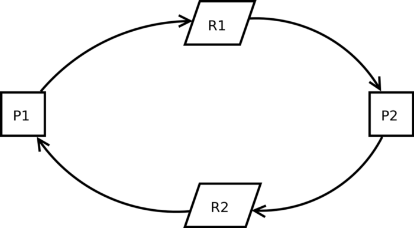

A Utility Class for Finding Database Deadlocks in .NET Applications
Database deadlocks were suspected in a large .NET Core project with around 50 transaction blocks.

To help pinpoint the source of the transaction as quickly as possible, I designed this set of utility classes to wrap calls to transaction method calls and set a limit on how long they can take to complete. Failure to complete within a given time (10 seconds as configured below) should result in logging out and an exception being thrown. The stack trace is included to help identify the source of the problem.
This is a destructive process in that it requires you to modify your code, but in my case the formatting of code was pretty consistent so using find and replace proved easy.
Bit of a caveat — the issue turned out not to be a dead lock, and so this code is unproven, but in theory it should work and I’ll be trying it again one day I expect! Hope it helps, because if you’re reading this, you probably need some today!
Using the source code below, you have to supply your own **ILogger** implementation, and create a guid for each call to **BeginMonitorTransaction** which will help you to identify logs and the transactions they relate to. I’m using a **UnitOfWork** helper class, but this applies to any code where **IDbConnection** and **IDbTransaction** are used.
Usage:
var monitoredTransactionId = Guid.NewGuid();
using (var dbtransaction = unitOfWork.DbConnection.BeginMonitorTransaction(_logger, monitoredTransactionId))
{
// Some database call ...
dbtransaction.MonitorCommit(_logger, monitoredTransactionId);
}
Full Code:
using System;
using System.Data;
using System.Timers;
using Microsoft.Extensions.Logging;
namespace AProject.Db.Data.Extensions
{
public static class DbConnectionMonitoring
{
// Time after which to consider a transaction locked
private const int DbConnectionMonitoringTimeoutMs = 10000;
/// <summary>
/// Replace calls to IDbConnection.BeginTransaction with this
/// </summary>
/// <param name="dbConnection"></param>
/// <param name="logger"></param>
/// <param name="guid"></param>
/// <param name="isolationLevel"></param>
/// <returns></returns>
public static IDbTransaction BeginMonitorTransaction(this IDbConnection dbConnection, ILogger logger, Guid guid, IsolationLevel? isolationLevel = null)
{
string uid = guid.ToString();
string stackTrace = Environment.StackTrace;
using (new DbConnectionMonitoringTimeout(logger, uid, nameof(BeginMonitorTransaction), stackTrace, DbConnectionMonitoringTimeoutMs))
{
logger.LogInformation(GetLogString(uid, $"{nameof(BeginMonitorTransaction)} BEGIN", stackTrace));
var dbTransaction = isolationLevel == null ? dbConnection.BeginTransaction() : dbConnection.BeginTransaction((IsolationLevel)isolationLevel);
logger.LogInformation(GetLogString(uid, $"{nameof(BeginMonitorTransaction)} END", stackTrace));
return dbTransaction;
}
}
/// <summary>
/// Replace calls to IDbTransaction.Commit with this
/// </summary>
/// <param name="dbTransaction"></param>
/// <param name="logger"></param>
/// <param name="guid"></param>
public static void MonitorCommit(this IDbTransaction dbTransaction, ILogger logger, Guid guid)
{
string uid = guid.ToString();
string stackTrace = Environment.StackTrace;
using (new DbConnectionMonitoringTimeout(logger, uid, nameof(BeginMonitorTransaction), stackTrace, DbConnectionMonitoringTimeoutMs))
{
logger.LogInformation(GetLogString(uid, $"{nameof(MonitorCommit)} BEGIN", stackTrace));
dbTransaction.Commit();
logger.LogInformation(GetLogString(uid, $"{nameof(MonitorCommit)} END", stackTrace));
}
}
/// <summary>
/// Replace calls to IDbTransaction.Rollback with this
/// </summary>
/// <param name="dbTransaction"></param>
/// <param name="logger"></param>
/// <param name="guid"></param>
public static void MonitorRollback(this IDbTransaction dbTransaction, ILogger logger, Guid guid)
{
string uid = guid.ToString();
string stackTrace = Environment.StackTrace;
using (new DbConnectionMonitoringTimeout(logger, uid, nameof(BeginMonitorTransaction), stackTrace, DbConnectionMonitoringTimeoutMs))
{
logger.LogInformation(GetLogString(uid, $"{nameof(MonitorRollback)} BEGIN", stackTrace));
dbTransaction.Rollback();
logger.LogInformation(GetLogString(uid, $"{nameof(MonitorRollback)} END", stackTrace));
}
}
private static string GetLogString(string uid, string operation, string stackTrace)
{
return $"ID: {uid} TransactionMonitoring {operation} {stackTrace} {DateTime.UtcNow.ToString("yyyyMMdd_HHmmss")}";
}
internal class DbConnectionMonitoringTimeout : IDisposable
{
private bool _disposed;
private readonly Timer _timer;
private readonly ILogger _logger;
private readonly string _uid;
private readonly string _eventDescription;
private readonly string _stackTrace;
public DbConnectionMonitoringTimeout(ILogger logger, string uid, string eventDescription, string stackTrace, int timeoutMs)
{
_logger = logger;
_uid = uid;
_eventDescription = eventDescription;
_stackTrace = stackTrace;
_timer = new Timer();
_timer.Elapsed += OnTimedEvent;
_timer.Interval = timeoutMs;
_timer.Start();
}
/// <summary>
/// On timer elapsed, log out and raise an exception to help pin point the delayed transaction completion
/// </summary>
/// <param name="source"></param>
/// <param name="e"></param>
/// <exception cref="DbConnectionTimingException"></exception>
private void OnTimedEvent(object source, ElapsedEventArgs e)
{
string errorMsg = $"{_uid} TransactionMonitoring {_eventDescription} {nameof(DbConnectionTimingException)} timed out: {_stackTrace}";
var exception = new DbConnectionTimingException(errorMsg);
_logger.LogError(exception, errorMsg);
throw exception;
}
public void Dispose()
{
Dispose(true);
GC.SuppressFinalize(this);
}
protected virtual void Dispose(bool disposing)
{
if (!_disposed)
{
if (disposing)
{
_timer?.Dispose();
}
_disposed = true;
}
}
}
internal class DbConnectionTimingException : Exception
{
public DbConnectionTimingException(string message) : base(message)
{
}
}
}
}